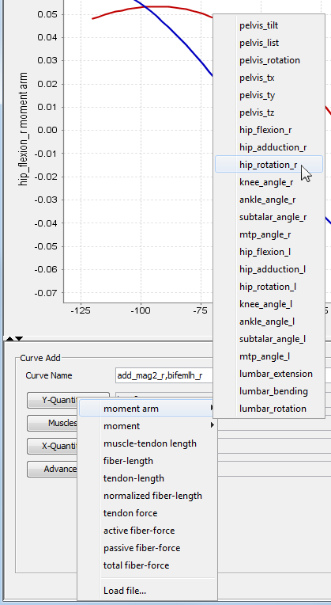

The topics covered in this section include:
Creating a Curve in the Plotter
Curves displayed in the plot panel are either based on data generated by OpenSim (built-in curves) or read from an external source (external curves). The general process for creating a curve is as follows:
|  |
|
|---|
Built-in Curves
OpenSim provides built-in analyses for some commonly computed quantities, such as moments and moment arms. The curves produced by these analyses are referred to as built-in curves. Built-in curves are computed for the current model. The following built-in curves are available:
- Moment-arm: A moment arm curve of a specific muscle (m) about a generalized coordinate (gy) against a generalized coordinate (gx) varies gx along its range of valid values in equal increments (100 by default). As the model is moved, the moment-arm of the selected muscle about gy is reported.
- Moment: A moment curve of a specific muscle (m) relative to a generalized coordinate (gy) against a generalized coordinate (gx) is similar to the moment-arm curve above, except that the moment of the selected muscle about gy is reported instead.
- Muscle-tendon length: A muscle-tendon length curve for a specific muscle (m) relative to a generalized coordinate (g) varies g along its range of valid values in equal increments (100 by default). As the model is moved, the total length of the muscle-tendon complex is reported.
- Fiber-length, Tendon-length, Normalized Fiber-length: These curves are drawn against a generalized coordinate (g). OpenSim generates these curves by varying g along its range of valid values in equal increments. For each position, the muscles are left to reach equilibrium based on current configuration and muscle properties (muscle tendon force, muscle force, and pennation angle are accounted for).
- Tendon-force, Active fiber-force, Passive fiber-force, Total force: These are similar to the fiber-length, tendon-length, and normalized fiber-length set of curves. In this case, the generalized coordinate selected for the X-Quantity is varied, and the model is left to reach equilibrium. Forces in the tendon, active force and passive force (e.g., based on force-length relation of the muscle), as well as the total force in the fiber are reported.
For quantities that depend on activation, activation is assumed to equal 1 and equilibrium between fiber and tendon is found. Exceptions are if you use the Activation Override (under Advanced Options) or if you specify an appropriate states file in the X-quantity. |
Motion Curves
Instead of varying a generalized coordinate to compute the curves in Built-in Curves, you can use a motion file to change the model configuration and compute the same quantities as described in Built-in Curves. In this case, the drop down menu associated with the X-Quantity… button contains the names of the columns of the motion file. Motion files have to already be associated with the model in order to be used by the plotter.
As new motions are added, they will appear in the drop down menu associated with the Y-Quantity… button.
Although it is possible to pick any column of the motion to plot against, it is customary to select "time" so that the quantities of interest are plotted through a given motion. This can be useful, for example, to plot moments generated during a complete motion trajectory.
External Curves
You can also plot data generated by other tools in OpenSim. For example, running the forward tool (How Forward Dynamics Works) generates a set of storage (.sto) files recording model states and the forces generated by various actuators in the model during a forward simulation. These can be plotted in the Plotter window.
To plot these results, select Y-Quantity -> Load file…. A dialog window appears for you to select the file containing the data. Once the file has been specified, you will be prompted to select which column in the file is to be used for the X-axis (domain) and which for the Y-axis. You can select more than one column to plot along the Y-axis. Once the file has been, it is available until the Plotter window is closed.
{kind=link}